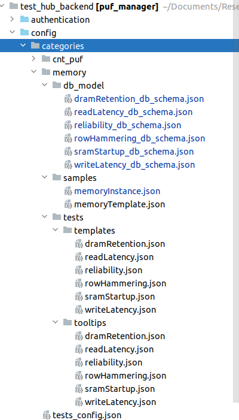

Backend
This application provides the backend REST service for the PUF Frontend. It stores the state of the GUI, connects to the Postgres databases storing CNT PUF and memory PUF measurements. It additionally contains background runners for evaluation and visualization tasks. It additionally provides authentication functionality, a NATS client to delegate tests to specific devices and direct access to the Generic Test Framework.
Database Structure
In general, the backend implementation relies on a straightforward database schema, as illustrated in the following figure.

Test execution can be categorized into three basic groups. First, the ‘sample under test’ represents the component on which the test is performed. For instance, in the case of memory-based PUFs, the sample would be the memory module. The second group encompasses the definition of the test itself, specifying the parameters and conditions for its execution. For example, this includes defining row-hammering tests. The third class describes the executing entity responsible for the execution of the test on a given sample, for example a memory controller executing a test on a specific sample. This database schema is automatically generated from a json configuration, explained later. Also the frontend GUI is adopted dynamically to this scheme.
Each of these groups has specific tables to store their respective templates. For instance a Sample config for a memory based PUF describes that a memory must have an address bus a data bus, etc. Whereas the Sample template describes a memory of specific properties, e.g. a SRAM memory module of a certain manufacturer with a set of properties. Instances of these memory modules are stored in the ‘Sample Instance’ table.
This structure also applies to the ‘Tests’ category. Here, a ‘Test Template’ defines the parameters of a specific test, like a row-hammering test. A Test Instance refers to the actual execution of a test template on a particular sample.
The definition of devices is slightly more complicated, as multiple devices may be necessary to execute a single test. For instance, conducting measurements, may require a micro-controller, a function generatorand an oscilloscope. These devices are defined as devices, based on a device template. All these devices are connected by a executer instance responsible, for the execution of a test instance.
A sample configuration for a carbon-nanotube based PUF implementation can be seen in the following sample:

Automated test scheme implementation
Within the backend it is possible to add new test categories, sample types or device classes without writing a single line of code. We provide a json definition, which allows the automatic generation of the database scheme, as well as a dynamic adoption of the GUI elements in the frontend.
The config files must be added to the config folder in the backend and will be automatically discovered parsed and the database scheme and GUI adjustment will be done.
Within this folder a tests_config.json defines the different test categories:
{
"test_categories": {
"cnt_puf": {
"name": "Carbon Nanotube Tests",
"folder": "cnt_puf"
},
"memory": {
"name": "Memory Tests",
"folder": "memory"
},
"script": {
"name": "Script Tests",
"folder": "script"
}
}
}
To add a new test category a new entry like
{
"sample_category": {
"name": "Sample Category",
"folder": "sample_category"
}
}
must be added.
Afterwards, the following folder structure must be established according to the database configuration as shown above.
{kind=link}
The tests folder contains configurations for all test templates, along with optional additional tooltips for the configuration parameters.
The samples folder contains all sample configuration files, defining the structure of sample instances and templates.
The db_model binds to gether all configurations of a category. It specifies which sample aligns with which template, among other connections.
To introduce new test templates, a “templates” folder must be added within the designated folder of the respective test category. Inside this folder, a “tests” directory is created. For instance, in the case of row-hammering tests, the configuration is defined as follows:
{
"start_address": 0,
"stop_address": 1000000,
"initialization_value": 85,
"write_value": 170,
"hammer_iterations": 100,
"address_offset": 16,
"temperature": 20,
"humidity": 0,
"supply_voltage": 3.3,
"iterations": 1
}
The backend automatically parses this config and creates the database and GUI elements. The provided values are set as default parameters. Furthermore, this JSON format is compatible with our comprehensive test execution framework, which will be elaborated on later.
Moreover, users have the option to append additional tooltips by including a file with identical naming within the designated tooltips folder. These tooltips are then displayed within the GUI, enabling supplementary descriptions of test parameters. For example, in the context of row-hammering tests, a “rowHammering.json” file would be added to the tooltips folder containing the following content:
{
"start_address": "Start address of the memory module (maximum 32-bit, e.g., 0x00000000)",
"stop_address": "Stop address of the memory module (maximum 32-bit, e.g., 0xffffffff). If this value exceeds the address space, the test is executed until the last address in the address space.",
"initialization_value": "Value to write to the memory module (maximum 32-bit, e.g., 0x55555555).",
"hammer_value": "Value written during the row-hammering operation.",
"hammer_iterations": "Number of write iterations for each row-hammering iteration.",
"address_offset": "When no address mapping is available, always hammer 'Address Offset' cells and evaluate the next 'Address Offset' ones.",
"temperature": "Only applicable if a climate chamber is available.",
"humidity": "Only applicable if a climate chamber is available.",
"supply_voltage": "Supply voltage of the memory module. Only applicable if a power supply is connected.",
"iterations": "Number of iterations for this test."
}
Now we want to specify the samples on which we want to apply a certain test template. To accomplish this, we need to establish a sample folder. Within this folderthe sample template, as well as the definition of a sample instance is stored. Those are subdivided into two files whreas a sample sample template for memory modules can be defined as follows:
{
"type": "None",
"manufacturer": "None",
"model": "None",
"start_address": 0,
"stop_address": 0,
"data_width": 16,
"address_width": 32,
"write_cycle_time": 0,
"read_cycle_time": 0
}
When incorporating a distinct test template, the attributes may vary significantly. The data type for database creation is generated automatically. Caution: For float fields, it’s essential to specify float numbers, such as 0.0 instead of 0, to ensure the creation of a float field; otherwise, an integer field will be generated.
Furthermore, alongside the template, an instance must be included. In this example, the memroyInstance.json simply adds a reference to the template and a specific identifier. Further fields can be added, simultanously to the template generation.
{
"template": {
"ref": "MemoryTemplate"
},
"memory_id": 0
}
Ultimately, a configuration file must be specified combining all the configurations. This alows to reuse sample configurations across multiple tests, or conversely, allows various tests to utilize the same sample configurations. The following config defines the different tables for row-hammering tests. The provided configuration delineates the distinct tables for row-hammering tests. Each test is identified by an identifier and a name, both displayed within the GUI. The GUI filter section enables the arrangement of elements into different groups on the GUI. For instance, fields containing addresses are automatically assigned to the address group, identifiers containing data are allocated to the data group, and any remaining elements are categorized under the “other” group.
In the following the different tables are defined. Here we can find all tables as defined in the figure showing the database scheme, except the device and executor tables which are generated by user interaction from the GUI.
{
"identifier": "rowHammering",
"name": "Row Hammering Tests",
"category": "memory",
"gui_filter": [
{
"identifier": "address",
"name": "Address"
},
{
"identifier": "value",
"name": "Data"
},
{
"identifier": "other",
"name": "Other"
}
],
"tables": [
{
"db_name": "RowHammeringTemplate",
"type": "testtemplate",
"schema": "rowHammering.json",
"fields": {
}
},
{
"db_name": "MemoryTemplate",
"type": "sampleTemplate",
"schema": "memoryTemplate.json",
"fields": {
}
},
{
"db_name": "MemoryInstance",
"type": "sample",
"schema": "memoryInstance.json",
"fields": {
}
}
]
}
After specififying the configuration, the database scheme must be generated calling the following command:
python3 ./utils/db_schema_generator.py
This command will add a generated folder in the test_manager app. Caution: Already generated models will not be overwritten, when modifying an already existing config, make sure you delete the corresponding python file beforehand. Furthermore, this will only generate the models without migrating them. The migration requires the execution of the commands:
python3 manage.py makemigrations
python3 manage.py migrate
To execute all commands in one step, the following shell script can be exectued:
.\redo_migrations.sh
Caution: This command also deletes the local sqlite database, deleting all samples and templates. The database storing the measurement results is not touched.
Definition of Evaluations and Visualizers
To assess and present measurement results effectively, we require the definition of evaluators and visualizers. These components are executed by specific evaluation runners, which handle the requested evaluation and visualization tasks independently from the backend application, running in a separate thread. Due to the diverse parameters involved, the definition of visualizers cannot be accomplished through simple JSON configuration files. Matplotlib library serves as the standard tool for all visualizations.
In order to establish a seenkess interaction with the frontend and generate artifacts such as vector graphics for visualization and JSON files for evaluation results, a template class is introduced. Visualizers must inherit from this template class to ensure a standardized interface for execution.
TODO: Develop a generic adapter to connect with PostgreSQL databases hosting measurement results. This adapter should operate independently from the database responsible for storing the application’s state.
import json
import threading
from datetime import datetime
from evaluation_manager.evaluation_models.general import EvaluationStatus, Visualizations
from evaluation_manager.evaluation_runner.evaluation_handler.cnt_puf_evaluation_handler import CNTPUFEvaluator
from config.evaluation_config import *
class EvaluationRunner:
"""
This class contains the functionality to outsource visualization and post-processing tasks in dedicated threads,
executed in the background. This allows a decoupling of computation intense visualization tasks and the main thread
of the backend server.
"""
def __init__(self, logger, eval_status: EvaluationStatus, visualization_type: str, visualization_properties: dict):
"""
Initialize EvaluationRunner instance.
Parameters:
logger: Logger object for logging messages.
eval_status (EvaluationStatus): Evaluation status object.
visualization_type (str): Type of visualization.
visualization_properties (dict): Properties for visualization.
"""
self.logger = logger
self.evaluation_status = eval_status
self.visualization_type = visualization_type
self.visualization_properties = visualization_properties
self._visualizer_thread = threading.Thread(target=self._visualizer_thread_function, args=())
self.output_json_objects = []
self.output_evaluation_dict = []
def run(self):
"""
Starts the visualization runner thread.
"""
self.logger.info('Start Visualization runner')
self._visualizer_thread.daemon = True
self._visualizer_thread.start()
def visualize(self):
"""
Perform visualization based on the visualization type.
TODO: Enable dynamic extension of evaluation configuration.
"""
cnt_fet_runner = CNTPUFEvaluator(self.logger)
if self.visualization_type == VISUALIZATION_TYPE_RAW_FIGURE:
self.output_evaluation_dict, self.output_json_objects = \
cnt_fet_runner.get_raw_evaluation_visualization_result(self.evaluation_status.id, DATABASE_NAME,
self.visualization_properties)
elif self.visualization_type == VISUALIZATION_TYPE_WAFER_OVERVIEW:
self.output_evaluation_dict, self.output_json_objects = cnt_fet_runner.visualize_wafer_overview(
self.evaluation_status.id, DATABASE_NAME, self.visualization_properties)
# TODO don't use these dummy values!!
self.output_evaluation_dict = [{'id': 0, 'wafer': 2, 'row': 3, 'column': 2, 'pufID': 5,
'nrSelectedCells': 144, 'nrConductiveCells': 30,
'nrNonConductiveCells': 100,
'nrSemiConductiveCells': 14, 'hammingWeight': 0.9}]
return bool(self.output_evaluation_dict and self.output_json_objects)
def _visualizer_thread_function(self):
"""
Execution function within the visualizer thread tasked to decouple computationally intensive visualization
from the main application.
"""
try:
self.logger.info('Start Visualization thread')
self.evaluation_status.status = STATUS_RUNNING
if self.visualize():
for output_json in self.output_json_objects:
self._save_visualization_result(output_json)
self.evaluation_status.status = STATUS_FINISHED
self.logger.info('Evaluation successful')
else:
self.evaluation_status.status = STATUS_FAILED
except Exception as e:
self.logger.error(f'Evaluation failed: {e}')
self.evaluation_status.status = STATUS_FAILED
finally:
self.logger.info('Update Evaluation object')
self.evaluation_status.stopTime = datetime.now()
self.evaluation_status.save()
def _save_visualization_result(self, output_json):
"""
Stores the visualization object in json format allowing for a seamless visualization in the frontend.
E.g. using the d3-library.
:param output_json: json-object representing the visualization.
:return:None.
"""
visualizations = Visualizations(
evaluationStatus=self.evaluation_status,
visualizationType=self.visualization_type,
resultObject=json.dumps(self.output_evaluation_dict),
json=output_json
)
visualizations.save()
Generic Messaging Service Endpoints
This section outlines the service-oriented architecture facilitated by the NATS framework. This framework enables seamless interaction among microservices responsible for test execution and the backend infrastructure.
In this architecture, devices communicate by subscribing to specific topics, while other devices publish relevant information on these topics. Subsequently, this information is disseminated to all subscribers within the network.
The provided interface provides the following functionalities:
Device Detection: It aids in identifying devices within the network.
Test Scheduling: Microservices utilize this interface to schedule tests efficiently.
Test Execution Monitoring: It facilitates real-time monitoring of test execution states.
Live-Plot functionality: Live data can be provided by a streaming interface, to enable visualization of meausrements during the execution, e.g. visualizing the SMU measurements.
Consequently, the interface offers the following endpoints, which must be implemented by any microservice instance to participate in the network:
Topic: schedule_test Payload: Concatination of the test template payload, the sample and device payload.
Example:
{}Topic: get_test_status Payload: Porvides the test id and the current state of the execution in percentage.
Example:
{}
Topic: get_devices: Payload: Device info following the configuration json file.
Example:
{}Topic: stream_data: Payload: Streaming data as array to be visualized at the frontend.
Example:
{}
REST Endpoints
The app is written in python using Django as main backend framework. Django allows us to subdivide the application into multiple apps with different functionality:
Authentication
Provides the functionality required for the logging functionality, which is based on a token, which is passed from the frontend.
It provides the following endpoints:
POST /authentication/logout deletes the requested token and prevents access to all services after sending logout.
Parameters:
token: token to delete
Returns: HTTP_205_RESET_CONTENT
Dashboard Manager
Provides all endpoints for widgets on the GUI dashboard
It provides the following endpoints:
GET /dashboard/get_log_messages/ returns log messages from the backend
Parameters:
log_category: e.g. all or specific parts of the backend, e.g. evaluation_manager.
log_type: e.g. Returns messages of a specific log type
message_count: number of messages to retrieve.
Returns:
{"logMessages": [ "10:01:12 [Evaluation Manager] devices_view.py:34 ERROR: Receive request failed", "10:01:12 [Evaluation Manager] devices_view.py:34 INFO: Receive request succeeded"]}
GET /dashboard/get_server_info/
Returns:
{"serverinfo": [{"property": "IP", "value": "127.0.0.1"}, {"property": "Port", "value": 8000}, {"property": "OS", "value": "UBUNTU LTS"}, {"property": "Online", "value": "31.12.2023 00:00"}]}
GET /dashboard/get_server_info/
GET /dashboard/get_log_messages/ Returns memory consumption, cpu load and network traffic parameters from the backend
Returns:
{"current_memory_consumption": 10, "current_cpu_load": 4, "current_network_usage": 40, "list_memory_consumption": [2.4, 2.8, 2.4], "list_cpu_load": [5.3,5.2, 8.5], "list_network_usage": [5.3,5.2, 8.5] }
Device Manager
Provides all endpoints related to the device manager, e.g. to identify devices or to retrieve the wafer configuration.
It provides the following endpoints:
GET /devices/get_devices/ returns all devices currently available in the databased, which is flushed after each startup.
Returns:
[{"name": "NANOSEC MicroService", "idn": "", "type": "nanosec_container", "protocol": "tcp_ip", "port": "10.42.0.180", "status": "online", "id": 0}]
POST /device/add_device manually adds a device to the backend. Other services are automatically added by an automatic discovery of the nats service
Parameters: Device specific configuration
Returns::
{"status": "ok"} {"status": "error"}
GET /device/get_wafer_configs returns the available wafer configurations.
Parameters: Device specific configuration
Returns::
[{"waferID": 2, "pufID": 23, "row": 4, "column": 4, "rowsOnPUF": [1,2,3], "columnsOnPUF": [4,3,2]}]
Evaluation Manager
Provides all endpoints to run evaluations, to list the available evaluation and visualization results and the endpoints to show evaluations and visualizations.
It provides the following endpoints:
GET /evaluation/get_evaluation_types returns the different evaluation and visualization methods, based on the selected test category.
Parameters:
testCategory: Currently the test categories “cnt_puf” and “memory” are supported.
Returns::
{"evaluationMethods": [{"label": "Visualization of Raw data", "value": "rawFigure"}, {"label": "Quantization (2-States)", "value": "quantize_2_states"}, {"label": "Quantization (3-States)", "value": "quantize_3_states"}, {"label": "Wafer Visualizer", "value": "waferVisualizer"}]
GET /evaluation/get_evaluation_types returns the default configuration parameters of an evaluation or visualization method, identified by testType.
Parameters:
testType: Currently the test categories “cnt_puf” and “memory” are supported.
Returns:
{"label": "Raw Figure", "value": "rawFigure", "properties": [{"type": "select", "label": "scale", "name": "Scale", "values": ["linear", "log", "symlog"], "default": "linear"}, { "type": "select", "label": "hide_legend", "name": "Hide Legend", "values": ["true", "false"], "default": "false"}, "....."]}
GET /evaluation/get_connected_measurements returns all measurements connected to a certain evaluation object.
Parameters:
taskID: The evaluation task which is connected to certain measurements.
Returns:
{"measurements": ["id": 0, "testType": "TransferCharacteristic", "testTitle": "Test1", "wafer": 2, "row": 7, "column": 8, "pufID": 23, "rowOnPUF": 4, "columnOnPUF": 3, "temperature": 23, "iterations": 5, "selectedIteration": 3]}
GET /evaluation/start_evaluation Schedules an evaluation in the evaluation runner.
Parameters: Individual parameters depending on the type oe evaluation. When plotting transfer characteristics:
e.g. for CNT PUF raw evaluation
{"scale": "linear", "hide_legend": "false", "legend_font_size": 20, "axis_tick_font_size": 15, "axis_label_font_size": 20, "title_font_size": 20, "plot_mode": "Source Drain Current"}
Returns:
{"status": "ok"} {"status": "error"}
GET /evaluation/get_status returns the status of all evaluation runs.
Returns:
{"tasks": [{"task_id": 158, "id": 158, "title": "Test", "startTime": 1706474333358.4011, "stopTime": 1706474385709.7869, "status": "finished", "evaluationType": "waferVisualizer"}]}
DELETE /evaluation/delete_result deletes an evaluation result from the database.
Parameters:
taskID: id of the task to delete.
Results:
{"status": "ok"} {"status": "error"}
GET /evaluation/visualizations returns evaluation data and a visualization json corresponding to a certain taskID.
Parameters: taskID: id to identify the chart and evaluationStatus data.
Results:
Returns a test specific chart and evaluationStatus data object.
Generic Messaging Service
Provides all the functionality to communicate with a messaging service. Currently, NATS messaging service is implemented, which allows to discover devices and to schedule test to multiple Micro Service which implements the device specific interface.
It provides the following endpoints:
GET /nats/start starts the nats service and connects to the broker (Important: run nats-server bevore)
Returns::
{"status": "started"} {"status": "running"} {"status": "error"}
GET /nats/get_test_status returns a list of all waiting, running or finished tests and additional data such as the test title, current, iteration, etc.
Parameters::
filter: specifies the queue which filters “waiting”, “running” or “finished” tests.
Returns::
{"status": "ok"} {"status": "error"}
POST /nats/schedule_test schedules a test across the nats-broker.
Parameters:
test specifying the specification in json
Returns:
{"status": "ok"} {"status": "error"}
Test Manager
Provides models and functionality to store and filter test templates and instances.
It provides the following endpoints:
GET /tests/get_evaluated_data returns evaluation data filtered by its type and id.
Parameters:
type: defines the test category either “cnt_puf” or “memory” is currently supported
id: Identifier of the test of a specific test category
Returns:
{"status": "ok"} {"status": "error"}
GET /tests/get_default_values returns the default values of a “memory” or “cnt_puf” test template initiation.
Parameters:
testClass: defines the test category either “cnt_puf” or “memory” is currently supported.
Returns:
in case of cnt_pufs
{"title": "", "min_VDS": -1, "max_VDS": 1, "step_VDS": 0.1, "min_VGS": -2.5, "max_VGS": 2.5, "step_VGS": 0.1, "test_type": "", "nrIterations": 1, "pulsed": "False", "temperature": 20, "hysteresis": "False"}
GET /tests/get_test_categories returns the different test categories available, e.g. memory tests, cnt, script or memristor tests.
Returns:
{"categories": [{"field": "memoryTest", "name": "Memory Test"}, {"field": "cntTest", "name": "Carbon Nanotube Test"}, {"field": "memristorTest", "name": "Memristor Test"}, {"field": "scriptExecution", "name": "Script Test"}]}
POST /tests/add_test add a test template to the database, which can later be scheduled.
Parameters:
parameter expects a json with test template specific parameters, e.g. for cnt-pufs
{ "title": "test", "test_type": "TransferCharacterization", "nrIterations": 2, "min_vDS": -0.5, "max_VDS": 0.5 "..."}
Returns:
{"status": "ok"} {"status": "error"}
DELETE /tests/delete_test deletes a test template identified by the test category and identifier.
Parameters: testType: defines the test category either “cnt_puf” or “memory” is currently supported id: Identifier of the test of a specific test category
Returns:
{"status": "ok"} {"status": "error"}
GET /tests/get_tests returns a list of test templates filtered by the test type.
Parameters: testType: defines the test category either “cnt_puf” or “memory” is currently supported
Returns:
{"tests":[{"id": 1, "title": "test", "testType": "Read Latency Tests", "category": "memory", "initialValue": "0", "startAddress": 0.0, "stopAddress": 0.0, "voltage": 10.0, "temperature": 10.0, "dataSetupTime": "1", "createdAt": "None", "iterations": 1, "initialValue_2": "1"}]}